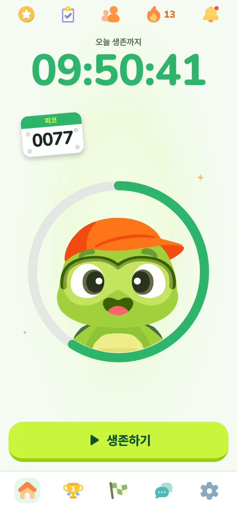
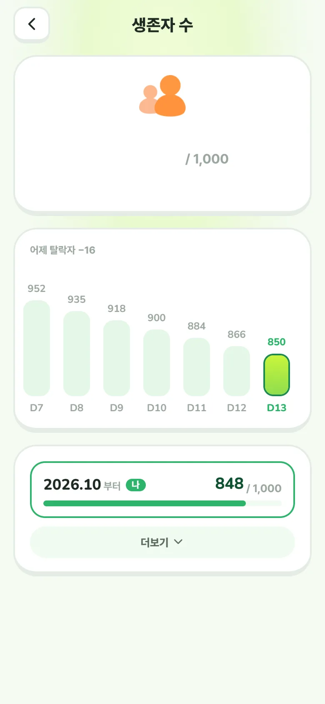
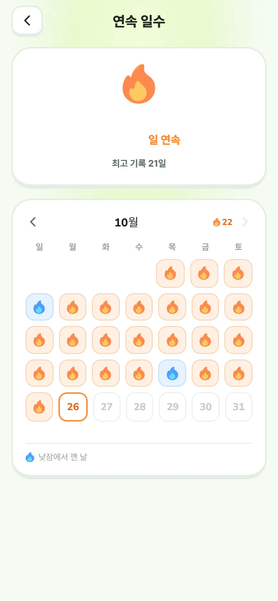
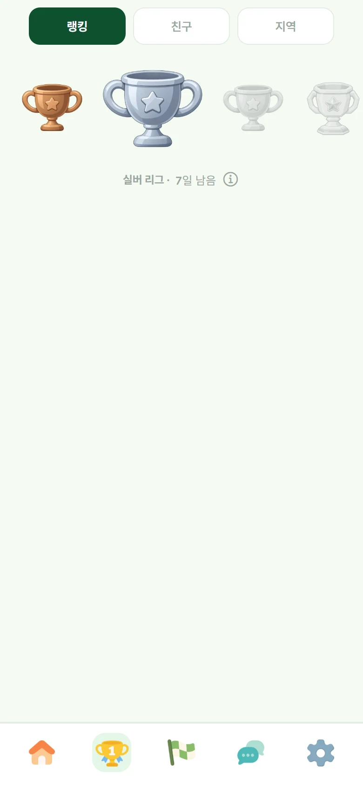
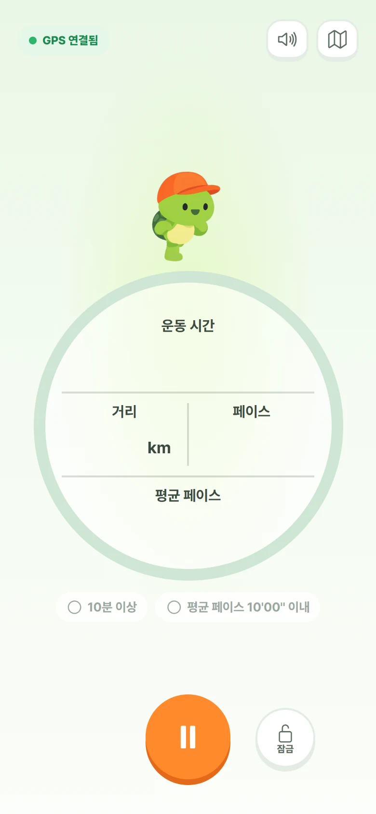
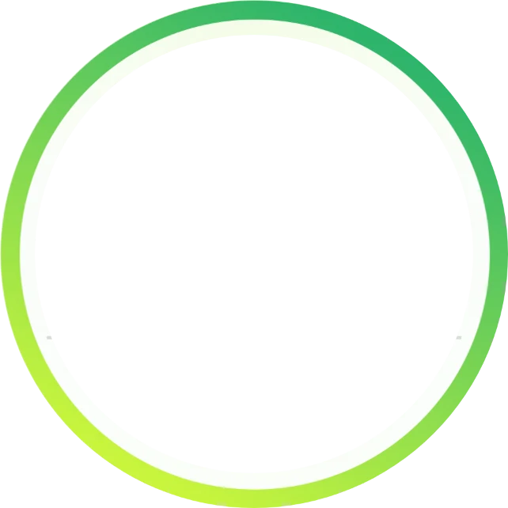
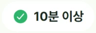
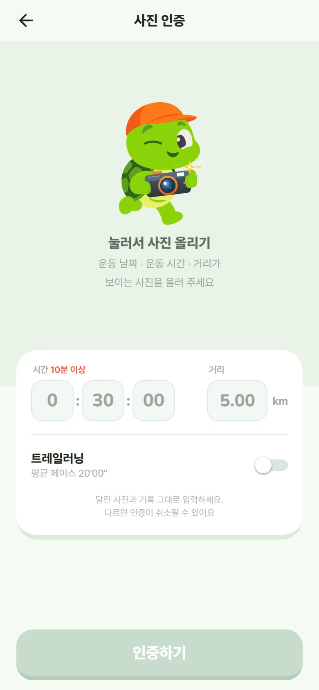
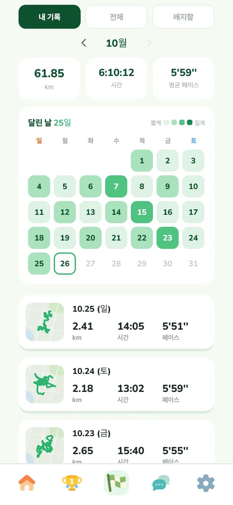
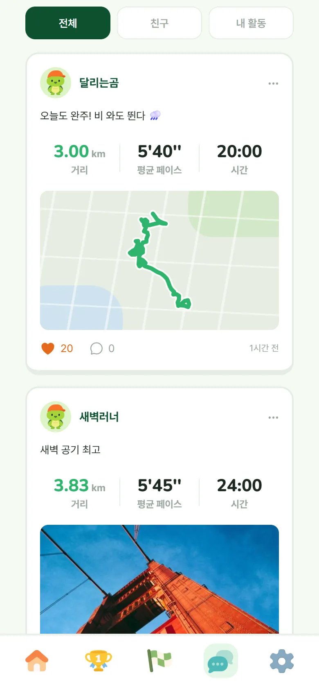

매일 10분,
꾸준히 달리는 습관
하루 10분 달리기를 매일 이어 가는 러닝 앱이에요. 매달 새로운 시즌에서 몇 명이 끝까지 살아남는지 지켜보고, 연속일수를 기록하세요.


850오늘, 몇 명이 살아남았을까?
같은 달 시즌을 함께 시작한 사람들 중 아직 살아 있는 사람이 몇 명인지 매일 보여 줘요. 하루하루 줄어드는 숫자 속에서 내가 아직 남아 있다는 게 다음 날 다시 나가게 만들어요.
- 날짜별 생존자 수 그래프와 어제 탈락한 사람 수
화면의 숫자는 예시예요.

13하루 놓쳐도 괜찮아요
인증을 놓친 날엔 탈락 대신 낮잠에 들어요. 다음 날 자정까지 깨어나면 연속 일수가 그대로 이어져요. 깨어나는 방법은 두 가지예요.
- 스스로 깨우기권 쓰기
- 친구가 깨워 주기
한 달에 두 번까지 깨어날 수 있어요.

이번 주, 승급 도전!
러닝 기록이 생기면 자동으로 랭킹에 참여해요 . 매일 달린 날과 거리로 점수가 쌓여요
- 매주 월요일 0시 초기화
- 친구와 우리 동네 러너들의 순위도 볼 수 있어요




밖에서 뛰든, 안에서 뛰든
날씨나 장소 때문에 끊기지 않도록 두 가지 방법을 모두 받아요.
- GPS 인증 — 거리 · 시간 · 페이스 · 케이던스 · 고도 측정
- 사진 인증 — 트레드밀 계기판, 워치 · 다른 앱 러닝 기록 사진 한 장과 시간 · 거리 입력


달린 날을 한눈에
이달의 거리와 달린 날을 보고, 친구와 다른 러너들의 기록도 피드에서 함께 봐요.
규칙은 간단해요
시즌 참가
매월 1일 새로운 시즌이 열리고 중간에 참가해도 시작할 수 있어요. 시즌에 참가해서 배번호를 뽑고 연속일수도 쌓아보세요
매일 10분 달리기
자정 전까지 딱 10분만 달리면 돼요. (평균 페이스는 10'00'/km 이내 트레일러닝 20'00''/km 이내)
하루를 놓치면 낮잠
인증을 놓친 날엔 낮잠에 들어요. 깨우기권이나 친구 덕분에 깨어나면 연속 일수가 이어져요.
끝까지 가면 다음 달로
시즌 마지막 날까지 살아 있으면 누를 것 없이 다음 달 시즌으로 이어지고, 연속 일수와 배번호도 그대로 가져가요. 낮잠에 들었다면 다음 달을 미리 신청해 두고, 그동안은 자유 달리기로 뛰면 돼요.